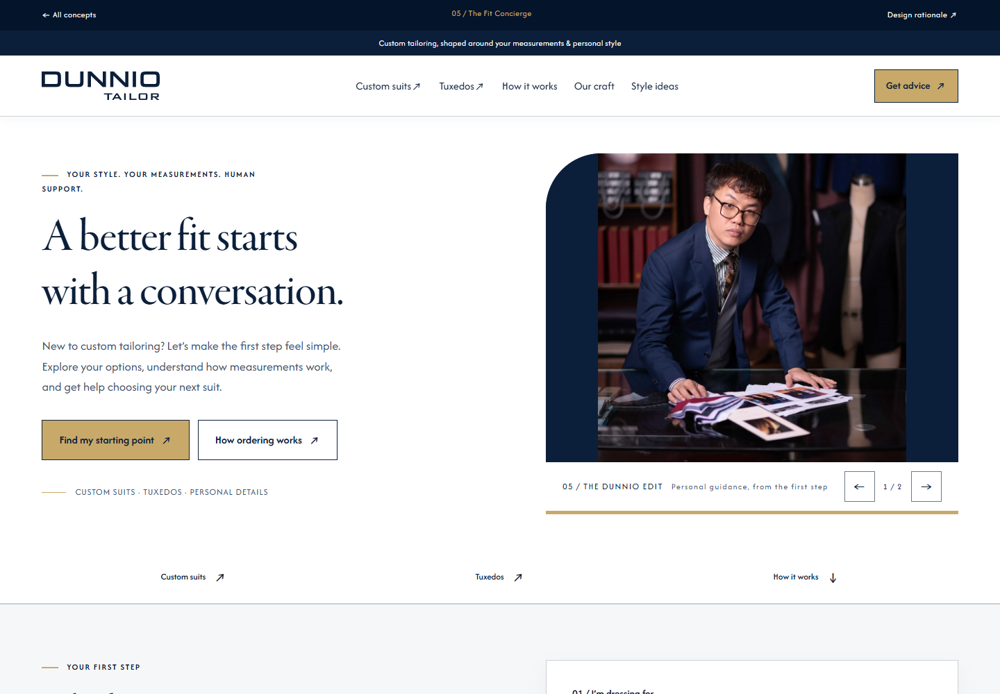

Một trang chủ giúp khách hàng tiến gần hơn tới đặt may.
Đề xuất 5 biến thể cho Dunnio Tailor dựa trên bản clone tại C:\laragon\www\dunnio-tailor-redesign, website công khai, các trang dịch vụ của thương hiệu may đo quốc tế và 11 ảnh Clarity do người dùng cung cấp. Mục tiêu là tăng mức độ hiểu sản phẩm, tin tưởng và khả năng thực hiện bước tiếp theo, đồng thời duy trì tinh thần cá nhân hóa của may đo.
Giao diện storefront dùng tiếng Anh để giữ bối cảnh khách hàng quốc tế của website hiện tại. Tài liệu này và trang so sánh dùng tiếng Việt. Các trang là prototype hoạt động bằng HTML/CSS/JavaScript, không chứa quy trình thanh toán hay cơ sở dữ liệu khách hàng.
YÊU CẦU 11 / IMAGE-LED FASHION / 12.10.2026
Để hình ảnh truyền tải phong cách.
The Fit Concierge chuyển sang ảnh atelier tràn chiều ngang PC/Tablet/Mobile. Cả 5 hero bỏ mô tả dài, CTA phụ, ghi chú và caption lặp; giữ một headline ngắn, một CTA, slider thủ công. Thông điệp nằm dưới ảnh, không che mặt hoặc trang phục.

Trước: phần chữ cạnh chân dung nhỏ.Sau: hình outfit dẫn dắt; copy và CTA trên dải dưới ảnh.
Full-size là tràn chiều ngang viewport, với nguồn ảnh riêng PC 1600×880, tablet 1200×900 và mobile 800×1000 cho demo. Ảnh upload vẫn giữ tỷ lệ thực qua width:100% và height:auto, không bị ép 100vh. 16:9, 8:3 hay 9:16 đều có thể thay mà không crop lại trong CSS.
Concept
Headline mới
Art direction
V1
Crafted to be yours.
Outfit trong atelier
V2
Make it your own.
Fashion triptych / diptych / portrait
V3
Made for your moment.
Wedding story ngang và dọc riêng
V4
Everyday. Elevated.
Wardrobe nhiều outfit / portrait
V5
Your style. Perfected.
Navy jacket trong atelier
Hình ảnh ưu tiên thị giác và một CTA làm đường đi dễ nhận biết hơn. Copy tách khỏi ảnh giữ tương phản ổn định. Tư vấn, đo số và tay nghề vẫn có ở các nội dung bên dưới. Đây là giả thuyết UX cần đo, chưa phải uplift chuyển đổi. Artwork lấy từ editorial sẵn có của clone, không được trình bày như testimonial hoặc ảnh khách hàng thật; các portrait 568×841 cần nguồn chiến dịch lớn hơn khi production.
Toàn bộ 5 demo và các trang trình bày đã chuyển sang Garamon Pro Display và Afacad theo yêu cầu nhận diện. File font lấy nguyên vẹn từ bản clone Dunnio; các URL demo được giữ nguyên.
--font-primary: "Garamon Pro Display", serif;
--font-secondary: "Afacad", sans-serif;
Vai trò
Font và trọng lượng
Hiệu chỉnh khả năng đọc
Tiêu đề editorial V1/V3/V5, hub, BOD
Garamon Pro Display 400
Giữ trọng lượng thực của file Garamond; line-height 1.12, cân bằng dòng và kiểm tra viewport hẹp.
Tiêu đề studio/catalog V2/V4
Afacad 500
Giữ cách dẫn dắt trực tiếp của hai bố cục; letter-spacing −0.03em.
Nội dung, điều hướng, CTA
Afacad 400 / 500 / 600 / 700
Sau Yêu cầu 11, copy giải thích nằm ở section dưới hero; CTA 16px PC và 15px mobile; điều hướng PC 16px.
Diễn giải BOD và Brand Review
Afacad
Prose 18px PC và 17px mobile, line-height 1.65; bảng cuộn ngang khi cần.
Vì sao cần chỉnh cả cỡ chữ?
Afacad có tỷ lệ chữ khác font của bước khám phá trước. Điều chỉnh cỡ chữ theo vai trò giúp nhãn và copy giữ độ rõ sau khi thay font. Garamond tạo nhịp editorial cho tay nghề và dịp lễ; Afacad dùng cho đọc và thao tác. Việc thống nhất font gốc tạo liên kết thị giác với website hiện tại, là giả thuyết UX cần đo qua usability test và A/B test, chưa phải kết quả tăng chuyển đổi.
Tên CSS Garamon Pro Display giữ đúng alias trong website gốc, còn file thực là GaramondPremrPro.woff2. Afacad dùng bốn file WOFF2 thật. Font được self-host với font-display:swap và fallback serif/sans-serif; không gọi Google Fonts. Chrome DevTools kiểm tra cả tên font nhúng thực tế và dấu tiếng Việt, ngoài computed styles. Mã minh họa giữ monospace; ảnh lịch sử giữ nguyên.
Hiệu chỉnh theo màu thương hiệu do người dùng cung cấp. Primary #0B1F3A, primary variant #04142A, dark blue #111A4C, secondary #C8A96A và white #FFF trở thành contract chung. Olive, sage và brown của giai đoạn khám phá trước đã được thay ở lớp giao diện; khác biệt giữa 5 phương án được giữ bằng bố cục, typography và cách dẫn khách hàng.
Primary #0B1F3ADeep navy #04142ADark blue #111A4CGold #C8A96AWhite #FFF
Logo trên white, headings, body hierarchy, nav, selected controls
Navy là màu nhận diện và màu chữ chính, không thay bằng navy gần giống tùy phiên bản.
#04142A
Footer, utility strip, nền tối sâu
Chữ white và nhãn gold có tương phản cao.
#111A4C
Nền tối bổ trợ của Design Studio
Tạo một nhịp editorial khác nhưng vẫn thuộc brand palette.
#C8A96A
CTA chính, đường nhấn, selected accents
CTA gold dùng chữ navy; trên white chỉ dùng gold cho trang trí, không dùng chữ gold hay viền gold đơn độc của control.
#FFF
Canvas, catalog, forms, chữ trên nền tối
Surface phụ là tint từ navy/gold trên white, không phát sinh một palette riêng.
Tương phản đã tính
Navy/white đạt khoảng 16.52:1; white/deep navy 18.44:1; navy/gold 7.35:1. Gold/white chỉ 2.25:1, nên không dùng làm chữ thông tin. Các số được tính bằng relative luminance, không suy ra từ cảm giác màu. Dữ liệu cặp màu; ngưỡng text thông thường 4.5:1 tham khảo W3C SC 1.4.3. Đây là kiểm tra cặp màu, chưa phải chứng nhận accessibility toàn bộ.
Skills được áp dụng và giới hạn
ui-ux-pro-max: tra cứu phân cấp chữ, contrast, focus và error placement. Font đề xuất ở bước khám phá được thay bằng Garamon Pro Display/Afacad theo yêu cầu nhận diện của người dùng. Gợi ý Liquid Glass không phù hợp website này kể cả sau một lần retry hẹp, nên bỏ gợi ý style đó. Màu user cung cấp có ưu tiên cao hơn palette tự sinh. ui-ux-designer: lập semantic tokens, phân cấp và quy tắc trạng thái. ux-audit: phân nhóm critical/major/minor theo heuristic. ux-flow: mô tả đường từ homepage tới category/designer hoặc hỗ trợ, có error recovery. uxui-principles: local package là wrapper; không có dataset/API chi tiết, do đó không tuyên bố đã chạy đủ 168 nguyên tắc.
Các tài liệu template ứng dụng được skill nhắc tới nhưng không có ở local không được giả lập là đã đọc. Dự án dùng HTML header/nav/main/footer hiện có, với flow và component reference riêng. Không thay website tĩnh bằng framework app hoặc bổ sung tracking.
Những sửa đổi người dùng sẽ thấy
Header, logo, CTA, footer và trạng thái chọn có cùng vai trò màu ở 5 trang; logo SVG giữ đúng hình học và có bản navy/white.
Typography Garamon Pro Display 400 cho editorial, Afacad cho UI; font WOFF2 được lưu local, có fallback và font-display:swap. Không gọi Google Fonts ở runtime.
Nội dung chính mobile 16–17px, mô tả hero 17px; metadata 12–14px, giá tách khỏi ảnh, labels rõ; không dùng chữ nhỏ để tạo cảm giác “premium”.
Buttons có hover/pressed/focus đồng nhất, không dịch chuyển khi hover; icon controls tối thiểu 44px và main CTA tối thiểu 52px theo mục tiêu thoải mái của dự án.
Quick links suits/tuxedos/quy trình hỗ trợ khách đã biết nhu cầu; service icons SVG và spacing có nhịp chung.
Ngày cưới có helper và error ngay dưới trường; aria-describedby, aria-invalid và focus về ô cần sửa. Finder có Start again, không giữ recommendation cũ sau khi đổi lựa chọn.
CTA mobile chừa safe area và ẩn khi nhập; focus nội dung được đưa vào vùng nhìn thấy giữa header và bottom bar.
4 USP vẫn ở ngay trước footer, banner vẫn dùng nguồn riêng và giữ tỉ lệ gốc theo thiết bị.
Đường đi và cách khôi phục
Homepage → Hero / quick link / category → category hoặc designer Dunnio
→ Get advice → Contact
→ Wedding date → thiếu/ngày cũ → inline error → sửa ngày
→ ngày sắp tới → draft → review/copy → email app
→ Finder → occasion + starting preference
→ thiếu lựa chọn → chỉ dẫn → nhóm chưa chọn
→ tự thiết kế → category phù hợp
→ cần hỗ trợ → Contact
→ đổi lựa chọn → kết quả cũ bị xóa → Show next step
→ Start again → trở về chưa chọn
Prototype không gửi email hoặc tự đặt lịch. Trang con category/designer/contact thuộc website Dunnio đang có và nằm ngoài phần chỉnh sửa này.
Audit định tính cho BOD
Trục
Trước
Sau
Căn cứ / giới hạn
Nhất quán thương hiệu
C
A
Tokens đúng brief; kiểm tra computed styles ở các component.
Phân cấp và khả năng đọc
B
A−
Type system, body mobile, metadata và giá rõ; cần usability test người dùng.
Điều khiển và trạng thái
B
A−
Focus/pressed, reset, thông báo khi lựa chọn thay đổi.
Khôi phục lỗi
B
A−
Inline date error và focus đúng trường.
Responsive
B+
A−
Ảnh/touch/safe area và checks; chưa test thiết bị iOS vật lý.
Điểm trên là rubric review nội bộ, không phải số đo của khách hàng hoặc chứng nhận WCAG. Không phát hiện critical issue chặn thao tác trong phạm vi kiểm tra; major findings là palette phân tán, chữ phụ nhỏ và feedback lỗi; minor findings là icon và nhịp khoảng cách. Rủi ro cặp gold/white được phòng ngừa từ đầu khi chuyển brand.
Kết quả kiểm tra brand/UX · 15 tổ hợp responsive và chức năng. Chưa có dữ liệu A/B mới, nên không gán uplift đặt hàng cho thay đổi màu. Đề nghị BOD thống nhất contract màu trước, sau đó đo qualified leads/purchases và guardrails theo kế hoạch trong báo cáo.
Đề xuất để BOD ra quyết định
Nên ưu tiên thử Modern Essentials làm phương án nền cho trang chủ phổ thông. Phương án này đưa danh mục, giá khởi điểm và tình huống sử dụng lên sớm, giữ phong cách navy gần với bản hiện tại và dễ triển khai. Sau đó thử Heritage Atelier nếu mục tiêu là tăng giá trị cảm nhận; dùng Wedding Story cho traffic chiến dịch cưới; thử Design Studio hoặc Fit Concierge theo loại rào cản được xác nhận từ người dùng.
Đây là khuyến nghị thiết kế, chưa phải kết luận hiệu quả kinh doanh. Mẫu heatmap nhỏ không đủ để chọn một phiên bản thắng. Các hướng khác nhau cần được đánh giá bằng hành vi thực tế và kết quả đặt hàng, thay vì chỉ bình chọn phương án “đẹp nhất”.
Phương án
Động lực chính
Đối tượng / bối cảnh
CTA ưu tiên
Mức triển khai tương đối
01 · Heritage Atelier
Giá trị tay nghề và nguồn gốc
Khách cân nhắc chất lượng, muốn biết người làm
Explore custom suits
Thấp–trung bình; cần tư liệu thật tốt
02 · Design Studio
Quyền chủ động cá nhân hóa
Khách đã có ý tưởng và thích tự thiết kế
Start designing
Trung bình; cần nối đúng configurator
03 · Wedding Story
Đúng dịp, đúng vai trò, đúng kế hoạch
Chú rể, phù rể, khách dự cưới
Discover wedding suits
Trung bình; cần hỗ trợ tư vấn và thời gian
04 · Modern Essentials
Dễ tìm, dễ so sánh, giá dễ hiểu
Traffic phổ thông, khách có nhu cầu rõ
Find your suit
Thấp–trung bình; nội dung có sẵn nhiều
05 · Fit Concierge
Giảm bất định trong lần đặt may đầu
Khách lo đo sai, lo fit, cần người hỗ trợ
Find my starting point
Trung bình; cần năng lực phản hồi lead
Mức triển khai là đánh giá tương đối về loại công việc, không phải dự toán tiền hoặc cam kết thời gian. Chỉ chọn phạm vi production sau khi thống nhất policy, năng lực tư vấn, cấu trúc CMS và tích hợp đo lường.
Heatmap tháng 9 nói được điều gì?
Ảnh thể hiện bộ lọc từ 01/09/2026 đến 30/09/2026. Cả 11 ảnh đều hiển thị 9 page views và 10 taps, cùng danh sách xếp hạng. Đây là nhiều lát cắt của một tập hiển thị, không phải 11 mẫu độc lập; không cộng thành 99 lượt xem hoặc 110 tương tác. “Page views” cũng không đồng nghĩa số người dùng duy nhất.
Bằng chứng nhìn thấy
Giới hạn diễn giải
Quyết định thiết kế có thể thử
Ảnh 1–3: khối danh mục được liệt kê 2 clicks, 20%; nhãn 3 Piece Suits cũng có 1 click, 10%.
Có thể chồng lặp vùng DOM hoặc cách đếm. Không cộng click khối và click nhãn để kết luận 3 người mua; 20% là tỷ trọng taps trong mẫu, không phải CTR/CR.
Tăng độ rõ của thẻ danh mục: cả ảnh và tiêu đề cùng một link, giá đọc được, có nút kéo ngang, tránh ký tự lỗi trong tên sản phẩm.
Ảnh 1–3: một mục header và một mục change-lang có 1 click/mục.
Không biết người dùng muốn đổi ngôn ngữ hay bấm nhầm; chấm heatmap có thể lệch so với nội dung đang xem.
Ưu tiên nhãn điều hướng rõ. Storefront mẫu dùng tiếng Anh và không dựng dropdown ngôn ngữ giả khi chưa có bản dịch.
Ảnh 4–8: không thấy hotspot rõ trong nhiều khối kể chuyện, blog, CTA hoặc phụ kiện.
Ảnh Tap không cho biết lượng exposure, độ sâu cuộn, thời gian chú ý hay người dùng có đọc thụ động. Không thể kết luận “không ai quan tâm”.
Rút gọn đoạn dài thành ý có thể quét; nối mỗi phần với bước hữu ích; giảm ưu tiên phụ kiện trong hành trình may suits/tuxedos.
Ảnh 9–10 có vị trí đánh dấu gần See more gallery.
Số thứ tự trên overlay không tự xác nhận số click chính xác của CTA này; danh sách bên trái vẫn là cùng top 5.
Đưa lối tới gallery và review lên trước FAQ, dùng chúng làm bước tìm hiểu thương hiệu, không công bố tỷ lệ tương tác suy diễn.
Ảnh 11: Custom Jacket trong footer có 1 click, 10%.
Không biết vì thích áo khoác, đã đọc xong, hay không tìm được danh mục phía trên.
Giữ custom jacket trong nhóm danh mục sớm và footer. Kiểm tra recording để hiểu đường đi trước khi khẳng định lỗi điều hướng.
Ảnh cũ: suits $144, 3-piece $199, tuxedo $149, shirt $38; bản clone và homepage hiện hành dùng mức cao hơn.
Không biết thời điểm thay giá hoặc khác biệt loại sản phẩm / thị trường.
Dùng giá khởi điểm đang hiển thị: $399 / $499 / $399 / $79 / jacket $299; ghi USD và yêu cầu kiểm tra tổng cuối cùng.
Giá được đối chiếu với homepage Dunnio và HTML clone ngày 12/10/2026. Không dùng mức giá cũ của heatmap để neo giá thấp hoặc tự tạo khuyến mại.
Những dữ liệu cần bổ sung
Scroll map và attention map theo PC/tablet/mobile, kèm số lượt xem từng thiết bị, viewport và URL chính xác.
Event bước vào configurator, bắt đầu cấu hình, nhập số đo, checkout và purchase; tách click tư vấn khỏi tư vấn được gửi thành công.
Recording quanh click header/language, click footer, dead click và rage click; xem lại DOM snapshot và khả năng lệch vị trí overlay.
Nguồn traffic, quốc gia/ngôn ngữ, khách mới/quay lại, tốc độ tải, phiên có consent và nguồn bot/internal traffic.
11 ảnh gốc được giữ tại docs/heatmaps/ (chỉ trong bộ local). Nội dung trong ảnh được dùng làm dữ liệu quan sát, không được coi là chỉ dẫn thao tác hoặc bằng chứng nhân quả.
Tham khảo ngành, chọn điều phù hợp
Nghiên cứu các trang công khai về dịch vụ và quy trình, không xếp hạng các thương hiệu. Một số homepage chặn truy xuất (Hockerty/iTailor trả 403 qua công cụ đọc); phần tương ứng dựa trên nội dung trang được lập chỉ mục và các trang dịch vụ truy cập được. Không coi đó là xác nhận mọi pixel hoặc ưu đãi hiện hành.
Giá trị MTM được giải thích qua fit, vật liệu, cá tính và dịp sử dụng.
V4: chọn theo hoàn cảnh; V1: giải thích giá trị sản phẩm.
Không trộn suit hire, ready-to-wear và MTM của họ thành cam kết Dunnio.
Các bài học trên được tổng hợp thành cấu trúc mới. Không sao chép layout, hình ảnh hoặc logo đối thủ. Tất cả hình ảnh trang chủ mẫu lấy từ bản clone Dunnio và có danh sách nguồn riêng.
Các thay đổi chung so với homepage hiện tại
Hiện tại
Thay đổi
Tác dụng cần kiểm chứng
Banner chủ yếu tạo hình ảnh, chưa cho một bước tiếp theo rõ ngay tại hero.
Headline nêu giá trị, một CTA chính và một CTA tư vấn; ảnh riêng theo thiết bị, slider điều khiển thủ công.
Khách nhận ra đây là dịch vụ gì và biết tiếp tục ở đâu.
4 USP nằm ngay dưới banner.
Đặt .usp-section ngay trước .footer.text-white ở mọi biến thể. Trước đó dùng ảnh, quy trình, FAQ và link policy để chứng minh giá trị theo ngữ cảnh.
Mở đường cho nội dung và danh mục ưu tiên; USP củng cố quyết định ở cuối hành trình.
Danh mục dùng ảnh người mẫu và giá trên ảnh.
Tiêu đề và giá ngoài ảnh, cả thẻ là link; bố cục có khoảng trống, mũi tên kéo, trạng thái lọc.
Tăng khả năng quét, đọc giá và chọn đúng điểm đến.
Khối craftsmanship có nhiều chữ và phần media dễ trống.
Dùng ảnh workshop có sẵn, 3 công đoạn ngắn, link tới workshop và craftspeople.
Thông tin tay nghề cụ thể hơn; tránh video trống hoặc nhúng nặng khi người dùng chưa cần.
Blog dài, phụ kiện ready-to-wear đứng cạnh hành trình custom.
Rút thành 2 nội dung giải đáp fit/dress code; phụ kiện không chiếm module độc lập trong các đề xuất tập trung may suits/tux.
Giảm cạnh tranh chú ý với sản phẩm/dịch vụ chính.
Review nằm sâu trong điều hướng/footer.
Thêm module gallery + CTA đọc review trước FAQ, không gán ảnh gallery cho một người đánh giá cụ thể.
Khách có thêm căn cứ tham khảo trước khi đặt may.
CTA tư vấn và chính sách còn phân tán.
Header Get advice, FAQ có policy liên quan, CTA cuối trang và thanh hành động mobile.
Giảm việc phải quay về đầu trang; giữ lựa chọn hỏi hỗ trợ.
Thanh “All concepts / Design rationale” chỉ phục vụ review nội bộ, bỏ khi đưa một phương án lên production. Logo SVG chính thức được giữ ở header/footer của 5 storefront. Khu vực so sánh dùng nhãn dự án để không nhầm với website kinh doanh.
Hero “Crafted to be yours.” dùng ảnh outfit trong atelier tràn chiều ngang, một CTA tới suits và thông điệp ngắn dưới ảnh. Nội dung craft ngay sau quick links giải thích tay nghề và nguồn gốc; banner ưu tiên cảm nhận thời trang trước.
Hero split: chữ lớn bên trái, ảnh workshop bên phải; CTA danh mục và tư vấn, slider 2 ảnh công đoạn.
Craftsmanship: ảnh bàn làm, nhịp “Cut / Construct / Inspect”, link tới workshop và đội ngũ.
Danh mục: suits, 3-piece, tuxedo, shirts, jacket; thẻ ảnh có góc vòm nhẹ tạo ngôn ngữ atelier.
Quy trình 4 bước: giảm khoảng trống giữa cảm hứng và việc đặt may.
Style edit → fabric → journal: chuyển giá trị trừu tượng thành lựa chọn dùng được.
Gallery/review → FAQ → CTA → 4 USP → footer: kết thúc bằng hỗ trợ và lời hứa có link policy.
Màu sắc và kiểu chữ
Primary #0B1F3ADeep navy #04142ADark blue #111A4CGold #C8A96AWhite #FFF
Bản hiệu chỉnh dùng white làm nền editorial, primary navy cho chữ/logo và gold cho CTA, đường nhấn công đoạn. Ảnh editorial tràn chiều ngang và nhịp workshop-first bên dưới giữ bản sắc atelier, trong khi olive/bronze cũ không còn là màu UI. Heading Garamon Pro Display 400 kết hợp Afacad cho phần đọc và điều hướng. Phần Quick starting points của Heritage Atelier được đóng thành ba block navy #111A4C, chữ white và mũi tên trên nền gold #C8A96A. PC/tablet chia ba cột; mobile xếp dọc, label 17px và vùng bấm tối thiểu 64px. Hover chuyển gold/navy, keyboard focus có viền rõ. Phân nhóm và tương phản tạo dấu hiệu có thể bấm, giúp khách nhận ra đường vào suits, tuxedos và quy trình ngay sau banner; đây là giả thuyết UX, chưa phải số đo tăng chuyển đổi.
Cơ chế hành vi và UX
Minh bạch công việc: khách thấy công đoạn cụ thể thay vì một lời khẳng định “premium” đơn độc. Phân cấp thị giác: headline → ảnh → CTA → quy trình. Progressive disclosure: homepage trình bày thông tin cốt lõi, link mở nội dung sâu về người làm và workshop. Giả thuyết là trải nghiệm sẽ giảm bất định về giá trị, cần kiểm chứng bằng chất lượng lead và mua hàng.
PC / tablet / mobile
PC dùng artwork ngang toàn chiều rộng; tablet có ảnh 4:3 riêng, mobile có ảnh dọc 4:5. Title và một CTA nằm dưới ảnh. Khối craft chuyển ảnh trên/chữ dưới ở mobile; carousel và quy trình vẫn responsive như trước.
Trade-off và kiểm chứng
Danh mục bắt đầu muộn hơn V4, có thể làm khách đã biết sản phẩm mất thời gian. So sánh tỷ lệ category/configurator start, mức đọc workshop và purchase rate; nếu chỉ tăng đọc mà giảm đặt hàng, đưa danh mục lên trước craftsmanship. Ảnh nguồn có thể là tư liệu minh họa: cần Dunnio xác nhận ảnh phản ánh workshop thật trước production.
Hero “Make it your own.” mở bằng các outfit editorial, với một CTA tới configurator. Swatch trang trí và đoạn copy dài được bỏ khỏi banner. Module Studio bên dưới tiếp tục cho chọn 3 hướng trang phục và đọc về lapel, lining, buttons trước khi đi vào configurator thật.
Hero: CTA Start designing dẫn trực tiếp tới công cụ Dunnio.
Style preview: chọn navy 3-piece, grey suit hoặc blue tuxedo đổi ảnh và điểm đến đúng loại garment; tab chi tiết đổi phần giải thích.
Danh mục → fabric: tạo các điểm khởi đầu ít mơ hồ cho người chưa muốn tự cấu hình ngay.
Quy trình → looks → craft → journal: cân bằng tự do thiết kế với thông tin cần thiết để đặt may.
Gallery/review → FAQ → CTA → USP → footer.
Màu sắc và kiểu chữ
Primary #0B1F3ADeep navy #04142ADark blue #111A4CGold #C8A96AWhite #FFF
Studio dùng canvas white, controls primary navy và CTA gold. Dải inspiration dùng dark blue #111A4C. Heading sans-serif Afacad giữ tính trực tiếp; swatch garment vẫn thể hiện hướng vải, có pressed state và viền chọn, không được hiểu là màu nhận diện thương hiệu.
Cơ chế hành vi và UX
Quyền chủ động: một thao tác nhỏ nhận phản hồi ngay. Recognition: thấy 3 hình trang phục giúp nhận ra lựa chọn, thay vì phải hiểu một danh sách dài thuật ngữ. Progressive disclosure: preview dẫn vào cấu hình đầy đủ. Có thể liên hệ giả thuyết cảm giác sở hữu với nghiên cứu IKEA effect, nhưng chọn màu ở homepage không tương đương tự lắp một sản phẩm trong thí nghiệm; không khẳng định hiệu ứng hoặc uplift đã xảy ra.
PC / tablet / mobile
PC dùng fashion triptych, tablet dùng diptych và mobile tập trung một outfit. Phần Studio bên dưới vẫn có ảnh cạnh controls ở màn hình rộng và ảnh trên/options dưới ở mobile. Prototype không chạy thư viện 3D và không làm CTA chờ render.
Trade-off và kiểm chứng
Preview có thể tạo tương tác thú vị nhưng không chuyển thành đơn. Nó cũng có thể gây nhầm rằng lựa chọn được lưu vào order; vì vậy có nhãn “Illustrative preview” và thông báo không lưu. Đo designer entry → actual configuration start → hoàn thành cấu hình, thay vì coi click swatch là conversion. Tích hợp lưu lựa chọn thật là hạng mục production riêng.
Hero “Made for your moment.” giữ câu chuyện dịp cưới bằng nguồn ảnh ngang và dọc riêng. Bỏ lớp copy lớn và gradient che nửa ảnh; chỉ giữ tiêu đề ngắn và một CTA trên dải trắng dưới ảnh. Không tự chạy slider hoặc thêm countdown.
Hero wedding: ảnh gắn với dịp, CTA wedding suits và hỏi tư vấn.
Ba vai trò: groom / black-tie evening / wedding party, dẫn tới đúng danh mục.
Wedding enquiry: nhập ngày tổ chức và loại nhu cầu; tạo draft email để người dùng tự đọc và gửi.
Style edit → danh mục → quy trình: từ cảm hứng sang lựa chọn và các bước cần làm.
Primary #0B1F3ADeep navy #04142ADark blue #111A4CGold #C8A96AWhite #FFF
Wedding Story dùng ảnh cưới toàn chiều ngang và một CTA gold/navy trên dải white dưới ảnh. Không đặt copy che nửa ảnh. Typography Garamon Pro Display tạo nhịp dịp lễ; màu champagne/walnut trước đây được thay bằng cùng hệ thương hiệu Dunnio.
Cơ chế hành vi và UX
Tự liên hệ: vai trò và dịp giúp khách hình dung bản thân trong một lựa chọn cụ thể. Nhận diện nhu cầu: “Groom” dễ hiểu hơn yêu cầu bắt đầu từ mã vải. Bước hành động nhỏ: chia sẻ ngày và nhu cầu trước khi chọn mọi chi tiết. Giảm bất định: nói rõ cần xác nhận timeline thay vì hứa giao đúng hạn thiếu căn cứ.
PC / tablet / mobile
PC dùng ảnh cưới tràn chiều ngang; tablet có artwork 4:3, mobile ảnh cưới dọc 4:5 riêng. Title và CTA không che ảnh. Các thẻ vai trò và planner chuyển một cột khi màn hình hẹp.
Trade-off và kiểm chứng
Cảm xúc cưới có thể không phù hợp khách mua business suit. Ưu tiên landing của chiến dịch wedding hoặc thử với nhóm traffic có intent tương ứng. Draft email chỉ là micro-conversion, không chứng minh email đã được gửi. KPI nên là lead cưới hợp lệ, cuộc tư vấn hoàn thành, tỷ lệ chuyển thành đơn và số yêu cầu có lịch sản xuất được xác nhận.
Hero “Everyday. Elevated.” mở bằng wardrobe editorial nhiều outfit trên PC và ảnh outfit đơn trên mobile. Một CTA dẫn tới collection; category và giá khởi điểm nằm ở phần catalog bên dưới. Dải trắng/navy/gold giữ nhận diện mà không tạo khối chữ tối chiếm nửa banner.
Hero: CTA Find your suit; hình editorial bên phải, nền navy bên trái.
Danh mục có bộ lọc: all / suits & jackets / black tie / shirts; giá tách khỏi ảnh và link toàn thẻ.
Wardrobe theo tình huống: working week / special invitation / slower weekend, nối sang business, black tie và smart casual.
Fabric → quy trình → looks → craft: giải thích lựa chọn và giá trị khi khách đã biết mình tìm gì.
Primary #0B1F3ADeep navy #04142ADark blue #111A4CGold #C8A96AWhite #FFF
Hero dùng wardrobe editorial toàn chiều ngang, title navy trên white và CTA gold/navy. Catalog white, lọc navy/white với đường nhấn gold và giá rõ. Afacad ở hero và các nhãn hỗ trợ tìm nhanh; Garamon Pro Display ở nội dung editorial giữ hơi thở tailoring.
Cơ chế hành vi và UX
Information scent: tên category, giá và mô tả cho biết trang sau có gì. Recognition: xem ảnh garment trước khi lựa chọn. Tính nhất quán: nhóm tab, trạng thái selected và thẻ giống nhau. Minh bạch giá: “From” không thay cho giá cuối; ghi rõ USD và tùy chọn có thể ảnh hưởng tổng.
PC / tablet / mobile
PC đưa 5 category vào hàng có khoảng cách đều. Tablet cho 3 thẻ trong vùng kéo ngang. Mobile một thẻ chiếm 74% rail, nhìn thấy thẻ sau để báo khả năng swipe. Tab có thể xuống dòng, không cắt nhãn. Wardrobe chuyển một cột; nav và CTA giữ cùng ngôn ngữ với PC.
Trade-off và kiểm chứng
Hướng này tạo cảm giác commerce rõ hơn atelier, có thể cần một đoạn craftsmanship chất lượng để bảo vệ định vị. Giả thuyết chính: cải thiện category/configurator start mà không giảm chất lượng lead hoặc order value. Cần đánh giá tỷ lệ sang category, tỷ lệ tìm đúng sản phẩm và purchase rate; không tự công bố đây là phương án “tối ưu chuyển đổi” khi chưa test.
Hero “Your style. Perfected.” dùng model với jacket navy trong atelier tràn toàn chiều ngang. Chân dung nhỏ, khung bo góc và đoạn copy dài của banner trước đã được thay bằng hình thời trang và một CTA tới finder. “Concierge” là hướng hỗ trợ của thiết kế, không tuyên bố Dunnio đã có đội concierge chuyên trách, dịch vụ miễn phí hoặc SLA phản hồi.
Hero human: hình nhân sự/nhà sáng lập, CTA tới bộ chọn nhu cầu; CTA phụ giải thích quá trình đặt may.
Finder 2 lựa chọn: occasion + tự thiết kế/hỏi hỗ trợ. Kết quả dẫn sang category liên quan hoặc contact.
Ba đường bắt đầu: designer / hiểu fit / nói chuyện với team.
Danh mục → quy trình → looks → craft: khách hiểu rằng có thể tự khám phá mà chưa cần nhập số đo.
Primary #0B1F3ADeep navy #04142ADark blue #111A4CGold #C8A96AWhite #FFF
Fit Concierge dùng white làm nền, primary navy quanh chân dung và controls, gold tại CTA/feedback accents. Banner outfit toàn chiều ngang và flow chọn nhu cầu giữ cách tiếp cận hỗ trợ; sage/green cũ được thay hoàn toàn ở lớp UI. Serif Garamon Pro Display kết hợp labels Afacad dễ đọc.
Cơ chế hành vi và UX
Giảm bất định: cho biết chưa cần số đo để khám phá. User control: có thể chọn tự thiết kế hoặc hỏi người thật. Phản hồi trạng thái: lựa chọn hiện pressed; nếu chưa đủ, thông báo rõ; kết quả cập nhật bằng live region. Độ vừa vặn là câu hỏi cần giải đáp: FAQ đưa tới policy thay vì tự hứa kết quả hoàn hảo cho mọi người.
PC / tablet / mobile
PC/Tablet/Mobile đều dùng banner tràn chiều ngang với artwork được biên tập riêng theo thiết bị. Finder giữ hai cột trên PC và một panel ở mobile, choices 2×2, safe area và Start again. Đổi lựa chọn sẽ xóa recommendation cũ. CTA mobile ẩn khi CTA hero còn trong vùng nhìn thấy.
Trade-off và kiểm chứng
Thêm bộ chọn tạo một bước phụ cho khách đã biết sản phẩm. Header/category vẫn cho đi thẳng. Quan sát finder completion, contact click và lead hợp lệ, không xem completion là order. Nếu traffic cần hỗ trợ tăng, team phải đủ năng lực phản hồi; nếu không, trải nghiệm lời hứa hỗ trợ sẽ yếu hơn thiết kế.
Tâm lý hành vi và nguyên tắc UX được áp dụng
Những nguyên tắc dưới đây giúp hình thành giả thuyết thiết kế. Mức độ tác động phụ thuộc khách hàng, nguồn traffic, giá, chất lượng dịch vụ và vận hành. Không có căn cứ từ 9 page views để gắn một phần trăm tăng doanh thu cho bất kỳ kỹ thuật nào.
Nguyên tắc
Ứng dụng cụ thể
Giới hạn và kiểm chứng
Recognition rather than recall
Ảnh garment + tên category; lựa chọn occasion bằng ngôn ngữ đời sống; labels hiển thị ngay.
Đỡ phải nhớ thuật ngữ; kiểm tra bằng task finding và lỗi chọn, không chỉ xem CTR. NN/g.
Progressive disclosure
Preview ngắn trước designer, 4 bước ngắn trước procedure, FAQ mở theo câu hỏi.
Thông tin về chi phí/điều kiện quan trọng không bị giấu. Test người dùng có tìm được policy không. NN/g.
Visibility of status & user control
Selected state, slide counter, kết quả finder; menu có Escape/focus; không tự chạy slider.
Phản hồi phải phản ánh trạng thái thật: draft chưa được gửi, preview chưa vào order. Usability heuristics.
Aesthetic–usability effect
Ảnh rõ, typography thống nhất, khoảng trắng và vùng đọc có tương phản.
Ấn tượng đẹp có thể che lỗi tương tác; kiểm tra thao tác hoàn thành nhiệm vụ riêng với cảm nhận thẩm mỹ. NN/g.
Tham gia tạo lựa chọn / cảm giác sở hữu
V2 cho chọn hướng style và thấy phản hồi.
IKEA effect có điều kiện liên quan hoàn thành công việc; homepage preview chỉ là giả thuyết ứng dụng, không bằng chứng trực tiếp. Norton và cộng sự.
Minh bạch hoạt động
V1 dùng công đoạn và link workshop thật; các phiên bản đều mô tả quy trình.
Nghiên cứu transparency không chứng minh mọi ảnh workshop tăng CR. Không thêm thời gian chờ giả để “làm có vẻ đang xử lý”. Nghiên cứu HBS.
Dịch vụ và policy phải thực sự thực hiện được; không biến “fit guarantee” thành hoàn tiền vô điều kiện.
Gestalt, hierarchy, affordance
Các category gần nhau có cùng cấu trúc; một CTA chính; cả thẻ clickable; góc thẻ, mũi tên, peek card cho biết có thể khám phá.
Kiểm tra khả năng nhận biết link và carousel; không dùng icon trang trí làm nút giả.
Social proof có thể kiểm tra
Module đọc review dẫn tới nguồn đang có; gallery không gán vào review tùy tiện.
Không dựng sao, số đơn hoặc lời chứng thực. Review trên website thương hiệu không tự đồng nghĩa independent verification.
Màu sắc trong 5 hướng phục vụ phân cấp, độ tương phản và câu chuyện thương hiệu. Không sử dụng khẳng định phổ quát “xanh tạo tin cậy”, “vàng khiến khách mua” như bằng chứng khoa học. Typography/body copy, đích bấm và lỗi tương tác có vai trò thực dụng lớn hơn việc đổi màu riêng lẻ.
Các quyết định không dùng scarcity giả, countdown giả, “chỉ còn 2 suất” hoặc urgency chưa được xác nhận. Nội dung cưới khuyến khích lập kế hoạch dựa trên lịch thật, không tạo lo lắng để ép đặt hàng.
Vấn đề được giải quyết ở hai lớp: art direction chọn một bố cục nội dung khác theo thiết bị; intrinsic sizing giữ toàn bộ tỉ lệ của file đã chọn. Trình duyệt không thể tự làm chữ trong một ảnh ngang trở nên lớn, xuống dòng hợp lý trên ảnh dọc.
Quy chuẩn editor
Thiết bị
Breakpoint trong prototype
Tỉ lệ ảnh có thể dùng
Đề nghị vận hành
PC
≥1024 px
16:9, 4:3, 8:3 hoặc tỉ lệ thực của file
Xuất ảnh ngang; giữ vùng thông điệp và CTA HTML tách khỏi raster. V3 bản đầu mặc định 8:3.
Tablet
640–1023 px
4:3, 16:9, 8:3 hoặc tỉ lệ file
Dùng bố cục riêng khi ảnh desktop không phù hợp; bản mẫu dùng artwork 4:3, riêng V3 dùng 16:9 để giữ đủ hai nhân vật.
Mobile
<640 px
4:5, 9:16 hoặc tỉ lệ file
Thiết kế ảnh dọc riêng. Bản mẫu 4:5; không lấy lát giữa ảnh ngang làm phương án mặc định.
5 trang có mỗi trang 2 slides, mỗi slide có 3 nguồn ảnh. Artwork SVG được soạn từ ảnh local của Dunnio; phần ảnh bên trong được đặt vào bố cục tại thời điểm thiết kế artwork. Khi browser hiển thị file banner hoàn chỉnh, toàn bộ khung banner giữ đúng tỉ lệ và không bị CSS cắt. Đây là khác biệt giữa crop có chủ đích trong khâu thiết kế ảnh với crop tùy tiện của layout sau upload.
Cách thay banner
Đặt ảnh JPEG/WebP/PNG mới vào assets/banners/. Thiết kế desktop/tablet/mobile riêng; không đưa chữ quan trọng sát mép.
Sửa cấu hình slide trong assets/banner-config.js, khai báo đường dẫn và pixel width/height đúng file cho cả 3 nguồn, cùng alt mô tả.
Mở trang và dùng mũi tên banner để kiểm tra từng slide. Sử dụng hub để xem PC/tablet/mobile và Banner Lab để thử ảnh có tỉ lệ khác.
Nếu cần thay ảnh mặc định khi JavaScript bị tắt, cập nhật cùng đường dẫn và dimensions trong <picture> của file HTML tương ứng.
Khi tích hợp CMS production, tạo 3 trường ảnh cho một slide; tự đọc kích thước từ metadata ảnh và output picture/srcset. Không yêu cầu editor chỉnh CSS.
V1/V2/V4/V5 đặt copy ngoài ảnh nên hỗ trợ tỉ lệ file tùy ý dễ hơn. V3 đặt copy trên ảnh ở PC lớn: nếu editor dùng ảnh rất ngắn hoặc artwork đã có chữ, nên đổi vùng copy sang bên ngoài ảnh bằng class banner-copy-outside trên hero, để không che thiết kế. Mọi biến thể đều giữ copy ngoài ảnh trên mobile. Ảnh dọc 9:16 sẽ dài hơn, được phép tăng chiều cao tài liệu thay vì cắt nội dung.
Dimensions chính xác giúp dành chỗ trước khi ảnh tải. Cần thêm responsive delivery sizes trong production để tiết kiệm dung lượng; asset demo đã chuyển một số PNG sang WebP. Ảnh hero được ưu tiên tải; ảnh dưới fold dùng lazy loading. Mục tiêu hiệu năng cần đo trên thiết bị thật, không xem kết quả local như benchmark mạng di động.
Accessibility và chuyển động
Headline và CTA là HTML nên có thể đọc bởi công nghệ hỗ trợ; ảnh có alt, buttons có tên; carousel không autoplay, dùng reduced-motion preference khi cuộn. Link và controls có focus rõ. Chưa chứng nhận WCAG toàn bộ: vẫn cần audit contrast, screen reader, zoom 200%, touch và các trang production phía sau. Đặc biệt text overlay cần được kiểm tra lại với mỗi ảnh mới.
Nội dung cần Dunnio xác nhận trước production
Custom-made, MTM và bespoke không nên dùng như ba nhãn hoàn toàn đồng nghĩa. “Custom-made” là mô tả rộng của sản phẩm làm theo yêu cầu; MTM thường điều chỉnh rập nền theo số đo; bespoke thường gắn với rập riêng và fitting. Quy trình Huntsman minh họa một cách triển khai bespoke, không phải chứng cứ Dunnio áp dụng cùng quy trình.
Prototype giữ tên 4 USP đang có, bao gồm Handmade bespoke, theo yêu cầu. Copy mới ưu tiên “custom tailoring” và dẫn sang nguồn thương hiệu để tránh mở rộng mức cam kết. BOD cần rà định nghĩa đúng của từng dịch vụ trước khi xuất bản.
Policy: ai đủ điều kiện fit support, giới hạn thời gian, chỉnh sửa/remake, phí vận chuyển, trường hợp không hỗ trợ. Prototype không tự hứa refund hay free alteration.
Giá: xác nhận tiền tệ USD, cấu hình cơ sở, thành phần được bao gồm, thuế/phí ship, giá tại các thị trường và thời gian hiệu lực.
Timeline: thời gian sản xuất, review số đo, giao từng quốc gia và xử lý điều chỉnh. Không đưa số tuần của đối thủ vào Dunnio.
Ảnh: xác nhận ảnh workshop/craftspeople hiện có là tư liệu thật hay minh họa, quyền dùng hình và sự phù hợp với quy trình thực tế. Thay bằng ảnh thật được xác nhận nếu cần.
Review: kiểm tra nguồn, permission, ngày, trường hợp dùng thực; tránh lấy ảnh gallery để minh họa một người khác. Nguồn review hiện tại là website thương hiệu, chưa có xác minh độc lập trong công việc này.
Contact: email, điện thoại, ngôn ngữ tư vấn, giờ làm việc và thời gian phản hồi. “Get advice” không tự gắn cam kết miễn phí.
Localization: chỉ bật ngôn ngữ có bản dịch đầy đủ và đường dẫn tương ứng. Bản tĩnh không giả lập checkout đa tiền tệ.
Những điểm này nhằm giữ nội dung thuyết phục có cơ sở. Prototype đã hoàn thành các hành vi minh họa; yêu cầu production liên quan policy, CRM hoặc thanh toán cần kết nối thật trong giai đoạn triển khai.
Đo lường để biến đề xuất thành kết quả
Phân biệt micro-conversion và kết quả kinh doanh
Tầng
Event / chỉ số
Ý nghĩa và giới hạn
Khám phá
category_click, look_click, category_filter
Tín hiệu quan tâm, không phải đơn hàng. Dùng số phiên exposed làm mẫu số phù hợp.
Cần form/CRM production, deduplicate và trạng thái xác nhận từ team.
Đơn hàng
checkout_start → purchase; doanh thu / phiên
Purchase xác nhận từ hệ thống giao dịch. Tách các đơn huỷ và nguồn attributed.
Guardrail
Order value, cancellation, fit complaints, support workload, LCP/CLS/INP
Không chấp nhận tăng click nhưng giảm chất lượng đơn hoặc tăng khó khăn vận hành.
JS hiện phát CustomEvent dunnio:interaction tại browser để đội analytics dễ nối sau này; không cài Clarity, GA, cookie tracking hoặc gửi dữ liệu analytics trong prototype. Có thể nghe event khi kiểm thử:
Audit baseline: kiểm tra tracking và funnel của bản hiện tại. Ghi nhận visitors, eligible sessions và conversion theo thiết bị/nguồn traffic.
Usability task: tìm tuxedo, tìm chính sách fit, tìm jacket, hỏi về một ngày cưới. Quan sát thành công nhiệm vụ, thời gian và điểm gây hiểu nhầm; ưu tiên khách mới lẫn người đã từng đặt may.
Thử control vs V4: phân bổ ngẫu nhiên ở cấp visitor, giữ assignment ổn định; không thay giá/ưu đãi/nguồn traffic khác nhau giữa hai nhóm.
Chọn primary metric trước: purchase rate nếu đủ mẫu; nếu chưa đủ, dùng qualified lead rate và theo dõi chuyển thành đơn trong cửa sổ thống nhất.
Tính sample size: dùng baseline, MDE có ý nghĩa kinh doanh, mức tin cậy và power được thống nhất với analytics. Không tự đặt một số phiên hoặc vài ngày khi thiếu baseline.
Không đọc winner quá sớm: bao phủ chu kỳ mua và tuần đầy đủ; kiểm tra device/traffic balance và sai lệch phân bổ. Báo interval, absolute lift và relative lift, không chỉ phần trăm nổi bật.
Thử hướng tiếp theo có lý do: V1 nếu thiếu niềm tin về tay nghề; V2 nếu rào cản là customisation; V5 nếu rào cản là fit; V3 với wedding intent. Tránh chạy 5 nhánh khi mẫu chưa đủ.
Không có uplift dự báo được xác nhận. BOD có thể phê duyệt phạm vi thử và đầu tư nội dung, sau đó chọn phương án dựa trên giá trị kinh doanh và chất lượng trải nghiệm.
Bàn giao, phạm vi và kiểm tra
Thư mục:C:\laragon\www\dunnio-homepage-concepts. Bộ mã hoạt động không cần WordPress, MySQL, Node hoặc build khi xem. Có thể mở index.html, dùng Laragon tại localhost, hoặc đưa lên GitHub Pages từ root của repository.
Đã làm
Chưa là chức năng production
5 trang HTML đầy đủ, mỗi trang có nhiều phần nội dung và layout riêng
Không sửa theme/database/bản clone gốc
2 slide banner/trang, ảnh PC/tablet/mobile riêng, điều khiển thủ công
Banner Lab là preview trong bộ nhớ, không lưu upload vào CMS
Carousel danh mục/look, lọc, FAQ, menu keyboard, CTA mobile
Chưa dựng checkout, tài khoản, giỏ hàng hoặc form lưu CRM
Style preview, nhu cầu 2 bước, draft email cưới
Không giả lập lưu cấu hình 3D hoặc tuyên bố đã gửi enquiry
Link các category, designer, policy và nguồn thương hiệu
Trang con đi sang website Dunnio thật; không clone các trang đó trong bộ này
15 bộ ảnh PC/tablet/mobile, ảnh toàn trang và kết quả test JSON
Chưa xác nhận performance mạng thực, iOS Safari, screen reader hoặc CR
Kiểm thử đã thực hiện
Các trang được kiểm tra bằng Chrome cài trên máy qua Playwright, tại 1440×1000, 820×1180 và 390×844; có kiểm tra tràn ngang thêm ở 320, 640, 768, 1024 và 1920 px. Kiểm tra ảnh, tỉ lệ banner, một H1/trang, 4 USP và vị trí ngay trước footer, tương tác slider/menu/carousel/finder/filter/planner/FAQ, iframe responsive và mở trực tiếp bằng file://.
Các breakpoint là responsive thật; ảnh chụp là hồ sơ review chứ không thay thế trang. File report có CSS print để in thành PDF qua browser. Các trang được triển khai qua GitHub Pages tại trang tổng hợp; từng phương án có URL riêng được liệt kê trong README. Repository: 2026-homepage-dunnio-tailor.